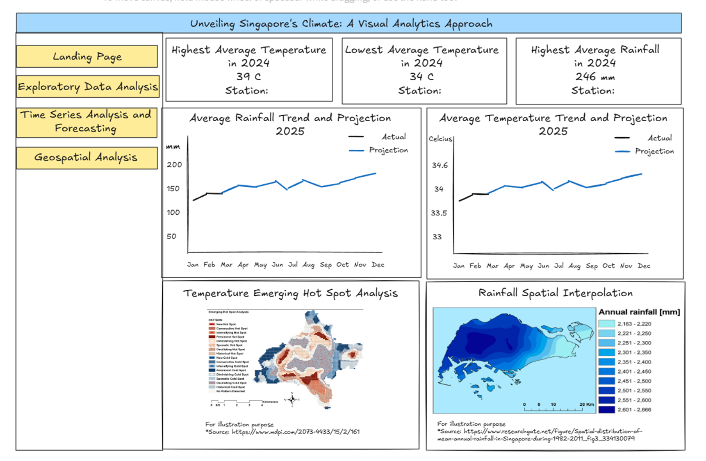
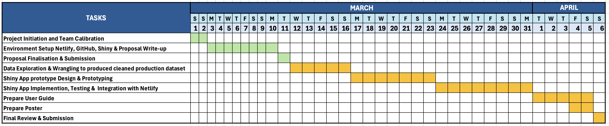

Singapore Weather Analytics
Project Proposal
1 Overview & Motivation
Singapore’s tropical climate, characterized by high temperatures, humidity, and intense rainfall, presents significant environmental and operational challenges across various sectors. Industries such as urban planning, real estate, insurance, agriculture, and infrastructure management require accurate and real-time weather analytics to make data-driven decisions and mitigate climate-related risks.
However, existing weather dashboards offer limited insights, focusing primarily on basic real-time observations without deep analytical capabilities, trend forecasting, or business-context integration. This project aims to address these gaps by developing a comprehensive, standalone weather analytics platform tailored to Singapore’s unique climate conditions.
Additionally, the platform will incorporate robust statistical methods, spatial visualizations, and advanced predictive modelling tools. These analytical capabilities will empower businesses, researchers, and policymakers to independently derive actionable insights, thereby enhancing strategic climate resilience decision-making. By balancing specialized climate data provision with generalized applicability, the platform will serve diverse informational needs without being restricted to any specific industry.
3 Scope of Work
Establish a Comprehensive Weather Analytics Platform
The platform will combine historical and current weather data from the Meteorological Service Singapore (MSS), covering temperature, rainfall and wind. The information will be clearly organized by location and time, making it easy to analyse detailed weather conditions for specific areas and periods.
Develop Advanced Visual Analytics
The platform will provide advanced interactive time series and geo-spatial visualizations, including trends, forecasting, heat maps, hot spot analysis and others. The platform will also use advanced statistical techniques to identify trends, detect unusual weather patterns, and forecast future conditions. It will also offer tools for interactive exploration of historical weather data, enabling users to effectively identify patterns, trends, and anomalies.
Enable Independent and Flexible Utilization Across Multiple Sectors
The platform will be easy to use, enabling users from various sectors such as business, academia, and government to independently analyse weather data according to their specific needs. It will offer adaptable analytic tools that support practical decision-making and strategic planning in different contexts.
4 Data
For this analysis, mainly three datasets will be used -
Historical weather data of Singapore from Meteorological Service Singapore (MSS): We examine key climate parameters - temperature, rainfall, and wind patterns. This dataset provides valuable insights into long-term trends, seasonal variations, and extreme weather occurrences, helping us understand how Singapore’s climate has evolved over the years.
Master Plan 2019 Sub zone Boundary from data.gov.sg: Provides geometry of Singapore’s planning area in the form of multi polygon features to facilitate further geo-spatial analysis.
Weather station locations retrieved from weather.gov.sg: To be used for data extraction and in conjunction with Master Plan Sub zone Boundary for geo-spatial analysis.
Our primary focus is to analyze weather patterns over the last 10 years (2015-2024), exploring trends across Singapore and various locations within the country. The dataset consists of daily weather records, allowing fora detailed examination of short-term fluctuations and long-term climate shifts.
5 Methodology & Analytical Approach
5.1 Data Wrangling
5.1.1 Aspatial Data -
- Data Collection & Merging: Scrape historical weather data from the MSS website for each location, month, and year from 2015 to 2024 and combine individual records into a single CSV file for unified analysis.
- Filtering Locations: Identify and retain only key locations in Singapore with consistent data availability.
- Handling Missing Values: Apply suitable imputation methods such as moving average or interpolation.
- Duplicate Removal: Identify and eliminate any duplicate entries to ensure data integrity.
- Data Formatting: Standardize variable names, data types, and ensure proper date-time formats.
- Outlier Detection: Identify potential anomalies in temperature, rainfall, or wind speed that may indicate data inconsistencies.
- Data Validation: Cross-check aggregated data against expected trends to confirm accuracy before analysis.
5.1.2 Geospatial Data -
- Coordinate System Validation: Check if the correct EPSG code is assigned to the simple feature dataframe, and assign the correct EPSG code if applicable
- Coordinate System Projection: Transform the sf dataframe from geographic coordinate system to projected coordinate system for futher calculations.
- Standardize Naming Convention: Identify different naming conventions between Weather datafame Location and the Subzone dataframe Planning Area and standardize to common naming.
- Data Join: Left join the Subzone planning dataframe with the Weather dataframe to bring in weather related information while keeping the dataframe as simple features.
5.2 Analytic Techniques
5.2.1 Exploratory Data Analysis (EDA) & Comparative Data Analysis (CDA) -
- Visualizing Distribution & Trends: Generate histograms, boxplots, and density plots to analyze the distribution of temperature, rainfall, and wind speed over the years.
- Comparative Analysis Across Locations & Time Periods: Compare weather patterns between different regions in Singapore and across different seasons.
- Correlation Analysis: Examine relationships between variables, such as how temperature fluctuations correspond with wind speed or rainfall intensity.
5.2.2 Time Series Analysis & Forecasting -
- Trend & Seasonality Detection: Use rolling averages, visual and seasonal plots to analyze long-term trends and seasonal variations in temperature, rainfall, and wind patterns.
- Time Series Decomposition: Apply statistical techniques like decomposition to separate trends, seasonality, and residuals.
- Statistical Analysis of Weather Patterns: Calculate key metrics such as mean temperature shifts, variance in rainfall, and wind speed fluctuations over time.
- Forecasting Future Trends: Utilize models such as ARIMA, Prophet or Exponential Smoothing to project future weather trends and assess potential climate risks.
5.2.3 Geo-spatial Analysis -
Spatial Pattern Detection: Identifying Clusters in Weather Metrics
- Identifying regions where neighboring locations exhibit consistently high rainfall or elevated temperatures, which may indicate localized climatic effects.
- Detecting spatial dependencies in wind speed, helping to understand airflow patterns across the city.
Spatial Autocorrelation Analysis: Detecting Weather Trends and Anomalies
Spatial autocorrelation techniques will be used to identify relationships between weather conditions at different locations and assess whether similar values cluster together. We will perform two key analyses:- Local Indicator of Spatial Association (LISA): Identifies statistically significant clusters or outliers where weather conditions deviate from surrounding locations.
- Emerging Hot Spot Analysis (EHSA): Identify persistent hot spots (regions where temperature or rainfall remains high) and cold spots (regions with consistently low values), highlight locations with shifting weather patterns.
Spatial Interpolation and Geographically Weighted Predictive Modeling for Weather Forecasting:
- Interpolate weather conditions at unmeasured locations based on nearby data points using distance weight and Kriging method
- Derive predictive models incorporate both temporal and spatial dependencies using Geographically Weighted Random Forest.
6 Prototype Sketch
This prototype sketch serves as the foundational design for our Shiny dashboard, providing a structured layout for key weather analytics. The dashboard will feature interactive and dynamic components, allowing users to explore various climate trends, forecasts, and geospatial analyses.

We will enhance this initial concept by incorporating customizable visualizations, and interactive elements such as dropdown selections, sliders, and tooltips for deeper insights. Each analytical component, including rainfall trends, temperature projections, and spatial analyses, will allow users to adjust parameters and visualize patterns dynamically. The final implementation in Shiny will ensure an intuitive, user-friendly experience tailored for policymakers, businesses, and researchers seeking data-driven climate insights.
7 R Packages
- tidyverse: a family of R packages designed to support data science and analysis tools.
- ggstatsplot: an extension of ggplot2 package for statistical visualisation and graphics creation.
- ggdist: an R package that support visualization of distribution and uncertainty.
- ggiraph: for making ‘ggplot’ graphics interactive.
- plotly: R library for plotting interactive statistical graphs.
- ggtext: tools for text formatting.
- scales: for formatting ggplot scale.
- tmap: for visualizing geospatial data
- sf: for handling geospatial data
- sfdep: to facilitate spatial dependence analysis with and sf and tidyverse friendly interface
- corrplot: for correlation matrix visualization
- shiny: for creating interactive apps in R.
- shinywidgets: extensions of shiny inputs
8 Project Schedule
Below is an overview of our project timeline.

9 References
- Impact of Climate Change in Singapore: https://www.nccs.gov.sg/singapores-climate-action/impact-of-climate-change-in-singapore/
- Understanding the Impact of Singapore’s Climate on Real Estate Choices: https://propzenconsultant.com/blog/understanding-the-impact-of-singapore-s-climate-on-real-estate-choices
- Shaping a Heat-Resilient City: https://www.ura.gov.sg/Corporate/Get-Involved/Plan-Our-Future-SG/Innovative-Urban-Solutions/Heat-resilient-city